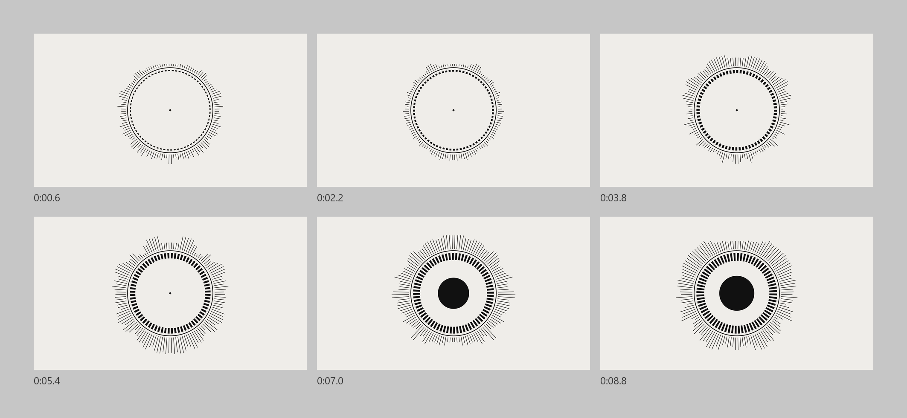
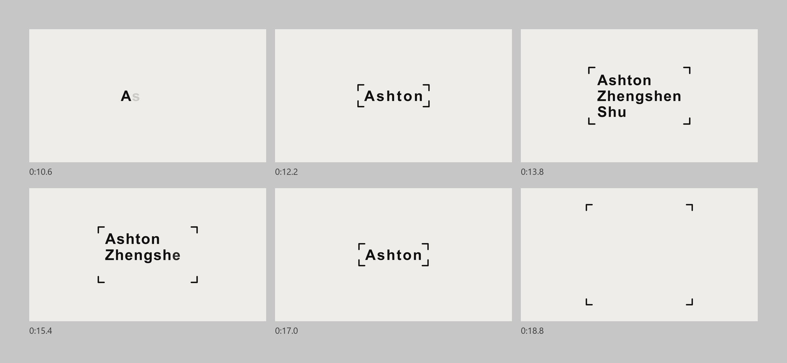
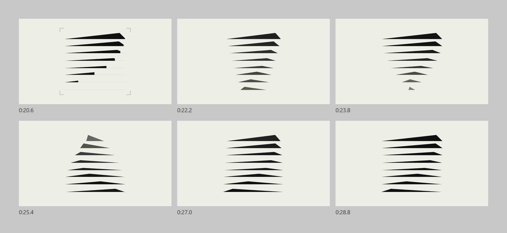

Motion Showcase
Three Parts In Thirty Seconds
A 30-second motion showcase for ART 1010 Motion Graphics I at Cambrian College.
Three Parts
Each part lasts 10 seconds and hands over to the next through a shape: the core of the first part shrinks into the cursor that starts the name, the brackets around the name open into the frame of the logo, and eight base lines become the eight bars of the symbol.
Music: What If So Then by Karneef (YouTube Audio Library).

Part One: Graphics To The Beat
A ring of 128 tick lines circles a small dot that anchors the frame. The ticks follow 64 frequency bands of the music, and a dashed band inside the ring widens with the mid range. On three strong kicks the ring bounces about 7 percent. On the strongest kick the ring splits into six arcs and a solid core appears in the centre, then bounces on two later kicks. In the closing moments the ring folds into the core, and the core shrinks to a dot.

Part Two: Name Animation
The dot blinks twice like a cursor, and the name types in one letter at a time, starting with Ashton. Corner brackets spring out of the dot to frame it, and while the name holds, its letter spacing slowly opens, so no hold is ever still. The brackets widen into a three-line frame for Ashton Zhengshen Shu, and the full name drifts a little closer before it erases back to Ashton. The brackets bounce on four kicks and finally open out into the frame for the logo. The approach follows the name animation that opens this website.

Part Three: Logo Page In Motion
The third part starts from a static page: the logo page of the Superlinear Academy brand guidelines. On the last two kicks of the name, eight thin base lines draw across the frame and become the eight bars of the symbol, each wiping in just after the last. The bars then turn around the vertical axis of the symbol like a cone, each slightly out of step and lighter when seen side on. The turn speeds up into a strong kick, holds its pace, then slows and lands back on the original logo after exactly five turns. The idea grew from Scan and Cone Rotate, two of the logo loops on the Superlinear Academy page.
Process
Ashton designed the motion and set its timing, then revised it in After Effects through successive versions.